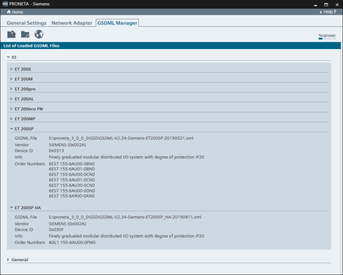

图标
名称
功能

添加 GSDML 文件
该图标用于从磁盘添加单个 GSD 文件。单击该图标，将打开文件浏览对话框。

添加 GSDML 文件夹
通过该图标，只需指定一个存储单个 GSD 文件的文件夹，即可在一次操作中添加多个 GSD 文件。单击该图标，将打开文件浏览对话框。

下载西门子设备的 GSDML 文件
将启动 Web 浏览器并建立与西门子工业在线支持门户的连接，可在此下载其它 GSD 文件，例如新设备的 GSD 文件。
在“设置”(Settings) 窗口中，有三种不同的选项卡可用：
这些模式用于调整 PRONETA Basic 的操作细节。
GSDML 文件（“通用站描述标记语言”）包含 PROFINET I/O 设备特性和功能的相关信息，如接口数量或支持的波特率。PRONETA Basic 已经预先安装了大量的 GSDML 文件。使用 GSDML 管理器，可支持其它设备以及仅在 PRONETA Basic 最新版本之后发布的设备。

功能栏
在画面顶部，功能栏提供以下功能：
|
图标 |
名称 |
功能 |
|
|
添加 GSDML 文件 |
该图标用于从磁盘添加单个 GSD 文件。单击该图标，将打开文件浏览对话框。 |
|
|
添加 GSDML 文件夹 |
通过该图标，只需指定一个存储单个 GSD 文件的文件夹，即可在一次操作中添加多个 GSD 文件。单击该图标，将打开文件浏览对话框。 |
|
|
下载西门子设备的 GSDML 文件 |
将启动 Web 浏览器并建立与西门子工业在线支持门户的连接，可在此下载其它 GSD 文件，例如新设备的 GSD 文件。 |